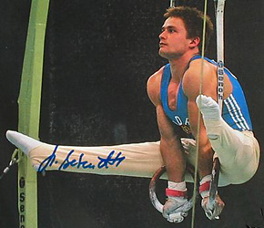

Holger Behrendt (GDR)
1988 Olympic R Champion
1989 European R
Champion

Medal Total
- Olympic Games: 1 Gold, 1
Silver, 1 Bronze
- World Championships: 3
Bronze
- European Championships: 1
Gold, 1 Silver, 3 Bronze
Holger was born on January 29,
1964 in Schonebeck and took up gymnastics at age 10. He was coached by Bernd Jäger (inventor of the Jäger
Salto) at ASK Potsdam.
Competition Results
- 1982
- Champions of Tomorrow Tournament: 1st AA
- GDR Championships: 2nd AA
- Jr. European Championships: 7th AA, 4th PB, 4th HB,
8th FX
SKDA Championships: 1st Team, 2nd AA, 1st FX, 1st PH, 4th R, 6th PB
- Tournament of Tomorrow: 1st AA
-
- 1983
- Cottbus International: 1st AA, 2nd PH, 2nd V
- Walzwerker Cup: 2nd AA
-
- 1984
- Beijing International: 8th AA
- Champions All: 6th AA
- Chunichi Cup: 7th AA, 3rd R, 7th PH, 7th PB, 8th V
- City Meet: 4th AA
- CSSR Spartakiade (Olomouc): 2nd Team, 7th AA, 2nd R
- DTV Cup: 2nd AA
- GDR Championships: 3rd AA, 1st PH, 1st R
- GDR-SUI Dual Meet: 1st Team, 3rd AA
- Tokyo Cup: 3rd R, 4th PB, 7th HB
-
- 1985
- Army Club Championships: 5th AA, 2nd FX
- Cottbus International: 2nd AA, 1st R, 2nd HB, 3rd PB
- DTB Cup: 4th AA, 2nd HB, 3rd FX, 3rd PB, 5th R, 5th V,
6th PH
- DTV Cup: 3rd AA
- Dynamo Spartakiade: 5th AA
- European Championships: 6th AA, 7th PH
- Gander Memorial: 6th AA
- GDR Championships: 2nd AA
- GDR-SUI Dual Meet: 1st Team, 4th AA
- Riga International: 12th AA
- World Championships: 3rd Team, 8th AA
-
- 1986
- Blume Memorial: 4th AA
- Cottbus International: 3rd AA, 2nd V, 3rd FX
- GDR Championships: 13th AA
GDR Cup: 2nd AA
- GDR-RSFSR Dual Meet: 3rd AA
- Goodwill Games: 9th AA, 4th PB
- International Championships of Romania: 5th AA, 3rd
PH, 3rd R, 3rd PB, 5th HB
- Walzwerker Cup: 6th AA
-
- 1987
- Chunichi Cup: 1st AA, 1st R, 1st V, 3rd HB, 5th PB
- Cottbus International: 5th AA, 1st R
- DTV Cup: 1st AA
- European Championships: 6th AA, 2nd PB, 3rd V,
5th FX, 6th R
- GDR Championships: 3rd AA, 1st R, 1st HB
- GDR-SUI Dual Meet: 1st Team, 4th AA
- ITA-GDR Dual Meet: 1st Team, 4th AA
- Tokyo Cup: 1st R, 2nd V, 3rd FX
- World Championships: 3rd Team, 6th
AA, 3rd HB
-
- 1988
- Cottbus International: 1st AA, 2st R, 2nd V, 3rd PB
- Gander Memorial: 2nd AA
- GDR-HUN-SUI Meet: 1st Team, 2nd AA
- GDR Championships: 3rd AA
- HUN International: 1st R
- Olympic Games: 2nd Team, 1st R, 3rd HB,
5th V
-
- 1989
- Cottbus International: 6th AA, 1st R, 2nd HB, 3rd FX, 3rd PH, 3rd V, 8th PB
- DTV Cup: 2nd AA
- European Championships: 3rd AA, 1st R, 3rd FX,
4th PB, 4th HB
French International: 5th AA, 2nd R, 3rd PH, 4th HB, 6th V
This page was last updated on June 22, 2021.
© Gymn Forum